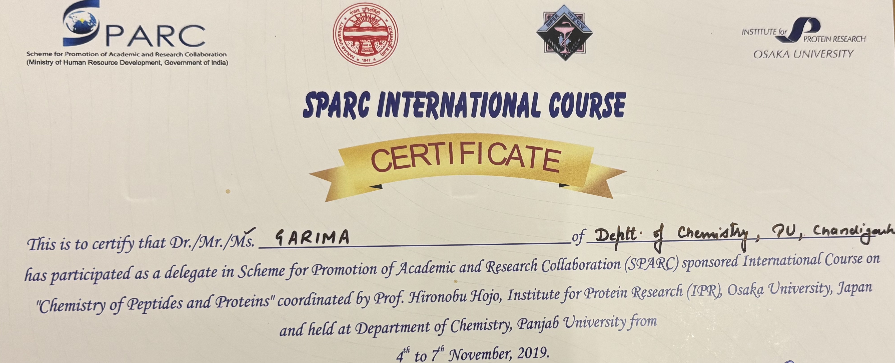
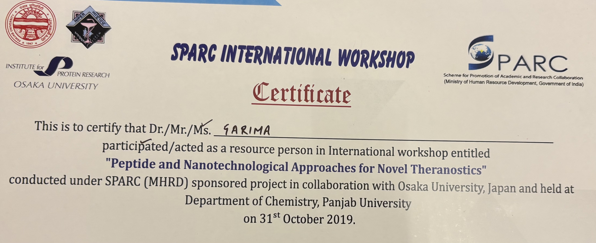
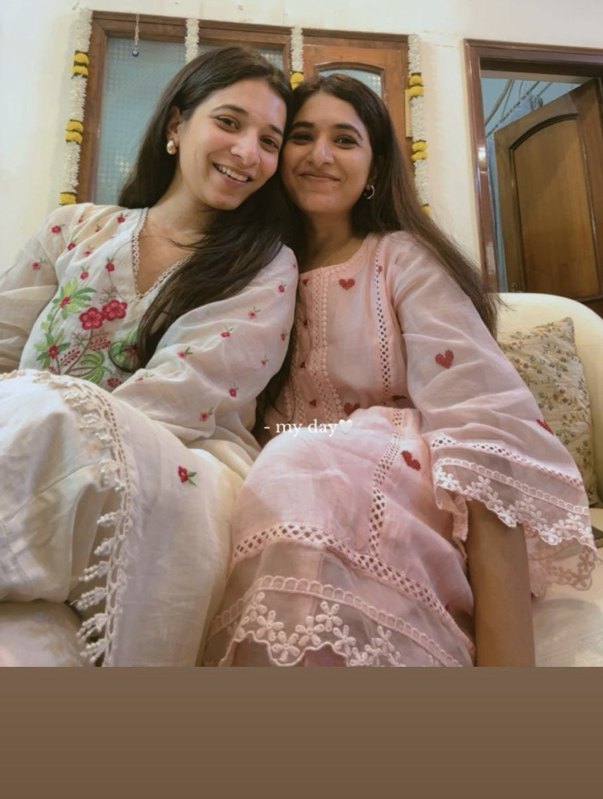

One Meal Apart
One Meal Apart was founded by Garima Dhingra to bring structured, clinically grounded nutrition care to individuals seeking sustainable metabolic health.
The practice was built around a simple philosophy: health rarely changes through extremes — it changes through structure, clarity, and consistent guidance.
Over the past several years, Garima has supported more than 1100 individuals within doctor-led healthcare environments, helping patients navigate metabolic health, hormonal balance, digestive concerns, and sustainable weight management.
Garima’s foundation includes clinical exposure at Medanta Medicity, Gurgaon, along with years of practical experience supporting patients through structured nutrition planning and metabolic stabilization.
Her work focuses on simplifying nutrition while maintaining scientific clarity — helping individuals build routines that are practical, sustainable, and physiologically aligned.

Garima has participated in international academic collaboration programs under SPARC (Scheme for Promotion of Academic and Research Collaboration), a Government of India initiative connecting Indian institutions with global research centers.
These programs included academic collaboration with the Institute for Protein Research, Osaka University (Japan), focusing on peptide science and nanotechnological therapeutic research.


Clinical Direction & Operations

Founder & Clinical Lead · Founder’s Office, Operations & Community
One Meal Apart was founded by Garima Dhingra and is supported operationally by Anisha Dhingra as part of the founding leadership team.
Garima leads the clinical and nutritional direction of the practice, focusing on metabolic health, hormonal balance, digestive support, and structured nutrition care rooted in physiology-based practice.
Anisha works closely with the founder’s office, supporting operational structure, systems coordination, and community experience within One Meal Apart.
Prior to joining the initiative, she worked in Infrastructure Advisory at Ernst & Young (EY GDS), collaborating with international teams across Oceania and Singapore engagements and supporting research and strategic project delivery.
If you're ready for structured, clinician-led guidance, begin here.
Book Consultation